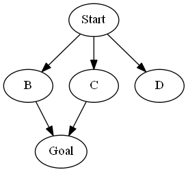

In deterministic state space models, we assume that the agent's actions
deterministically lead to a successor state which is observed. MDPs allow us
to handle the situation where actions result in a known distribution over
possible successor states; the successor state is unknown before taking the
action, but observed after taking the action. In this problem, we'll consider
the case where we don't have a distribution over successor states, and we
might not even observe the successor state after taking an action.
Consider a state space model with starting state $s_\text{start}$ and goal state $s_\text{goal}$.
For each state $s$ and possible action $a \in \text{Actions}(s)$,
instead of a successor function $\text{Succ}(s, a)$ that returns the resulting state deterministically,
we have $\text{SuccSet}(s, a)$, which returns a set of possible states that the agent could end up in. Each successor in $\text{SuccSet}(s, a)$ has positive probability.
Importantly, before you take an action, you will not know which of the possible states you will end up in.
To make things simple, assume that all actions are possible from all states
with the same cost.
Define two scenarios:
- Scenario 1: After taking action $a$, you will observe the resulting state $s' \in \text{SuccSet}(s, a)$.
- Scenario 2: After taking action $a$, you will not observe the resulting state $s' \in \text{SuccSet}(s, a)$.
Define two goals:
- Goal 1: find a sequence of actions or policy which necessarily (is guaranteed to) reaches the goal state.
- Goal 2: find a sequence of actions or policy which possibly reaches the goal state (with non-zero probability).
In the following, you will construct state space models (which can be either deterministic state space models, MDPs, or general games).
You should pick the simplest model that is sufficient to solve the problem.
As an example, consider the following model. Let there be two actions,
$\{Forward, Forward2\}$. $\text{SuccSet}(s_\text{start}, Forward) = \{B,C\}$,
$\text{SuccSet}(s_\text{start}, Forward2) = \{C,D\}$, $\text{SuccSet}(B, Forward) =
\text{SuccSet}(C, Forward) = \{s_\text{goal}\}$. All unmentioned state/action pairs
return the empty set.

Under Scenario 2, the sequence of actions, $[Forward, Forward]$ will achieve Goal 1 and Goal 2, whereas $[Forward2, Forward]$ will only achieve Goal 2.
- [2 points]
Construct a state space model to achieve Goal 1 under Scenario 1.
- [2 points]
Construct a state space model to achieve Goal 2 under Scenario 1.
- [2 points]
Construct a state space model to achieve Goal 1 under Scenario 2.
- [2 points]
Construct a state space model to achieve Goal 2 under Scenario 2.
- [2 points]
Let $c_{i,g}$ be the cost of the minimum cost path returned for Scenario $i$ and Goal $g$.
Specify all relationships between the values $c_{i,g}$ which are guaranteed to hold (e.g.,
one quantity is always at most another quantity).
- [2 points]
Suppose we're in Scenario 2. For Goal 1, describe a consistent A* heuristic based on the solution of Goal 2.
People love iBuckets. Each quarter, people demand a certain number of iBuckets
($d_i$ in quarter $i$).
If there ever comes a time when
in the previous quarter, no one wants iBuckets (if $d_{i-1} = 0$),
then no one will want iBuckets now ($d_i = 0$).
Otherwise, the demand $d_i$ is either exactly one more than the previous quarter (with
probability $\alpha_+$), the same (with probability $\alpha_=$) or exactly one fewer
(with probability $\alpha_-$) than the previous
quarter's demand $d_{i-1}$.
Initially, the demand is $d_0 = 100$.
Fortunately, you have a company that has a monopoly on iBuckets.
You have a factory with some number of iMachines $m_i$ at quarter $i$.
You can make each iMachine produce either zero or one iBucket per quarter.
In addition, each quarter, you can buy up to $K$
new iMachines to add to the ones you already have or remove up to $K$ old iMachines,
and this will determine $m_{i+1}$ for quarter $i+1$. Initially, you have no
iMachines ($m_i = 0$).
Each new iMachine costs $b_i$ dollars to buy (one time cost), $k_i$ dollars to
maintain per quarter, and $r_i$ dollars to remove (one time cost).
Each new iMachine costs $b$ dollars to buy (one time cost), $k$ dollars to
maintain per quarter, and $r$ dollars to remove (one time cost).
Each quarter, you choose to produce $s_i$ iBuckets (which can be no more than your
production capacity $m_i$).
Each iBucket costs $c_i$ dollars to make and sells for $p_i$ dollars.
Each iBucket costs $c$ dollars to make and sells for $p$ dollars.
Of course, you can't sell more than the demand $d_i$ or
more than you actually produce $s_i$.
For simplicity, assume $p_i > c_i$, and you cannot store unsold iBuckets for the next quarter.
For simplicity, assume $p > c$, and you cannot store unsold iBuckets for the next quarter.
Your profit each quarter $u_i$ is the revenue from sales minus total operating
costs. Your goal is to maximize the total profit $\sum_{i=0}^\infty u_i$.
If $d_i = d_\max = 200$, then $d_{i+1}$ stays the same or decreases with equal probability. This is purely a technicality to make the state space finite (we don't care that you include this in your answer).
[5 points]
Formulate this problem as a Markov decision process.
What are the states, actions, transition distribution, reward function,
initial state, and terminal state(s) (if there are any)?